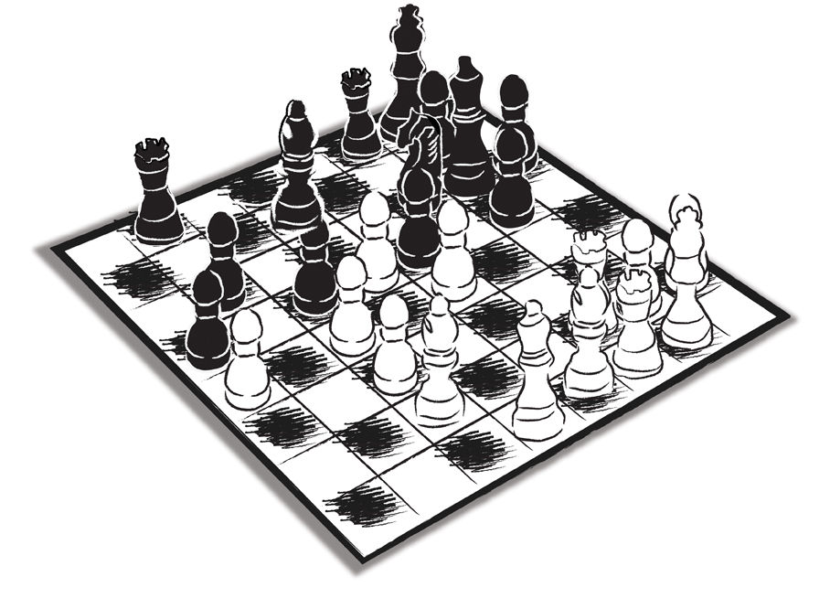

Aslında zekâsı aklının önünde koşanlar, ‘İçindekiler’e bakıp hemen buraya sıçrayabilir ve sadece bu bölümü okuyup kitabı kapatabilir.
Akılları, en az zekâları kadar gelişmiş olanlar ise, kitabı ilk cümlesinden başlayarak okuyacak, buraya öyle gelecektir.
Benzer bir ayrım, kitapları baştan sona okuyanlar ile arka kapaklardaki özeti okuyup kitabın tümü hakkında bilgi sahibi olmak gibi bir ‘kolaycılığa’ kapılanlar arasında yapılabilir. ‘Giriş’ bölümlerini bile atlamadan yazarın yaptığı sıralamayı izleyenler ile gazeteleri arka sayfalarındaki spor bölümünden başlayarak okuma alışkanlığını kitap okumaya taşımış olanlar arasındaki ayrım da ne demek istediğimize iyi bir örnektir…
Eş ve/veya özel müşteri kaybetmenin ne kadar hasar verici, maliyetli, verimsiz bir süreç olduğunu buraya kadar anlatabilmiş olmayı umuyoruz.
O zaman bu noktada “Kaybetmemek için çıkış yolu var mı?” diye sorma zamanı ve yeri çoktan gelmiştir.
Çıkış yolu, tabii ki var…
Çıkış yolu olmayan, çözümü bulunmayan, yaşam ve ölüm arasındaki diametral çelişki dışında hangi ‘dünyevi’ zıtlık var ki?
Devası olmayan (ölümcül olanları dışında) dert olabilir mi? O zaman dert olmazdı zaten. Devası olduğu için dert derttir…
Ancak derdin devası kendiliğinden gelmez. Devayı üretmek gerekir. Bazen de deva, geçmişten geleni yok etmek değil, onunla uzlaşmak şeklinde tezahür edebilir.
Önce en kabasından bakalım. Çevrenizde boşandığı eski eşiyle yeniden evlenmiş olanlar var mı? Ben en az on çift tanıyorum böyle…
Peki, evli olmadan ayrılıp ‘barışanlar’, ondan sonra mutlu mesut yuva kurmuş olanlar? Ne kadar çok değil mi?
Eski reklam ya da halkla ilişkiler ajansından bir şekilde sıkılmış ve bu yüzden ‘yolları ayırmaya’ (bu deyim bile bu kitabın adının ne kadar doğru seçilmiş olduğunu gösterir) karar vermiş kaç şirket bilirim ki, düzenledikleri konkur sonunda dönüp yine eski ajanslarıyla çalışmaya karar vermişlerdir.
Bu yaklaşım, arada ‘meze’, ‘figüran’ olan ajanslara karşı ‘erdemsiz’ bir tutum gibi gözükse de hayatın içinde var olan bir davranışın çıktısıdır. ‘İnsani olan hiçbir şey bize yabancı olamayacağına’ göre, bu durumu da toplumsal hayatın bir parçası olarak görmeye alışmamız gerekir.
İnsan genellikle ve alışkanlıklarından ‘vazgeçmeme’ adına ‘affetmeye’ meyillidir… Onun (aslında garantilerini yok eden) garanticiliği, her zaman daha düşük potansiyel ve kinetik enerji düzeylerine akmaya mütemayil iç yapısı, insanı genellikle kolaycılığa doğru iter.